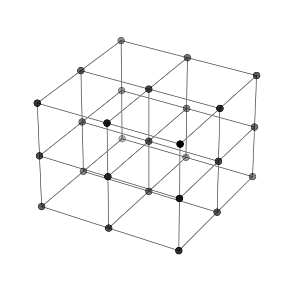
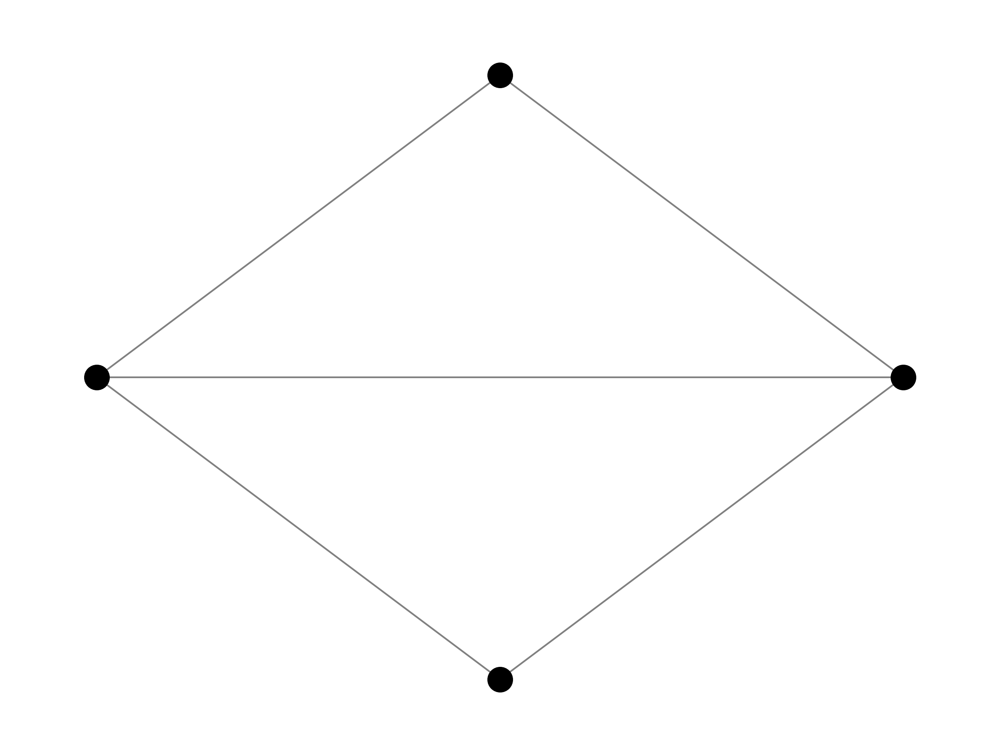
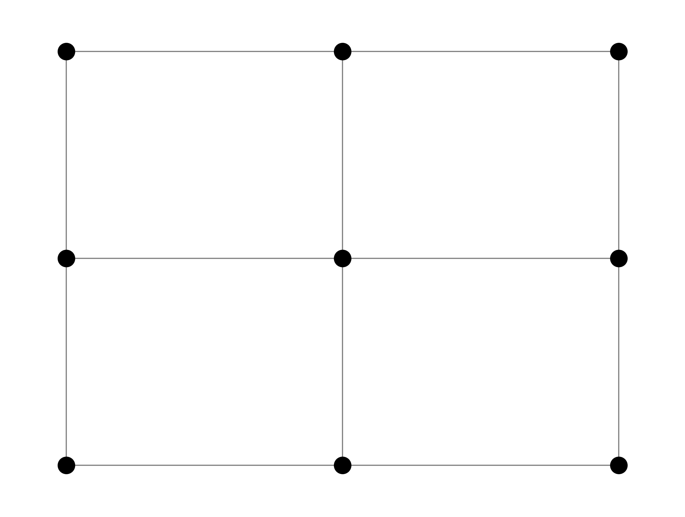
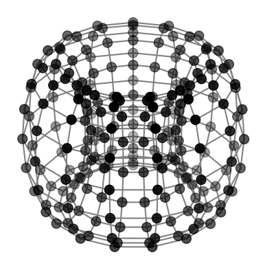

Graph Geometry
In this subpage we will explore the different graph geometries that may be present as Ising models. Note that all figures representing their designated graph geometry are arbitrary and for visualization purposes only.
Bi-Clique
A bi-clique is a complete bipartite graph, i.e., it consists of two disjoint sets of nodes where each node in one set is connected to every node in the other set. This structure is useful for modeling systems whose interactions are between two groups and not within their own groups.
Below is an image depicting a 6-node bi-clique graph.

Cubic
A cubic graph - or 3-regular graph - is one where each node has three neighbors. These graphs are prevalent in 3D Ising models and are useful for simulating certain spin-glass systems.
Below is an image depicting a 27-node cubic graph.
Cylindrical
A cylindrical graph can be visualized as a 2D lattice that is wrapped around one axis, forming a cylinder. Periodic boundary conditions are applied along one axis, while the other axis has open boundaries.
Below is an image depicting a 24-node cylindrical graph.

Diamond
The diamond configuration refers to a repeating arrangement where each node typically connects to four others. It is commonly associated with lattice models in condensed matter physics.
Below is an image depicting the 4-node diamond pattern.
Edwards-Anderson (EA)
The EA model consists of a lattice (most commonly as 2D or 3D) with random coupling strengths between nearest neighbors. This model is essential in spin-glass theory and incorporates disorder and frustration, making it ideal to observe complex energy landscapes.
Below is an image depicting a 9-node Edwards-Anderson graph.
Full
The fully connected Ising model consists of a lattice where each node has a connection to every other node. For the purposes of our dataset, we have removed all edges that are reflexive, i.e., a node points to itself.
Below is an image depicting a 6-node fully connected Ising model instance.

Hopfield
The Hopfield Ising model corresponds to a fully connected, symmetric graph. Each node is connected to every other node through weighted edges whose weights are typically determined using a predefined binary pattern. This graph is equivalent in structure to the fully connected Ising model, but differs in the weight assignment.
Below is an image depicting a 6-node Hopfield graph.

Line
The line Ising model allows at most two neighbors to each node. As a result, the Ising model chain can be graphically represented by a line of connected nodes.
Below is an image depicting a 5-node line-connected Ising model instance.

Sherrington-Kirkpatrick (SK)
The SK model is a fully connected Ising model where the coupling strengths between spins are chosen randomly (often from a Gaussian distribution). This model is essential in spin-glass theory and exhibits complex behavior.
Below is an image depicting a 6-node Sherrington-Kirkpatrick graph.

Toroidal
A toroidal Ising model contains a lattice with periodic boundary conditions. The criterion for the boundary conditions are as follows:
The left edge is adjacent to the right edge.
The top edge is adjacent to the bottom edge.
These conditions create a surface that has no boundaries. In other words, it ensures every spin has the same number of neighors.
Below is an image depicting a 4-dimensional toroidal graph.
Wishart Planted Ensemble (WPE)
The WPE is a graph-based model whose structure is derived from a random Wishart matrix with a planted solution. This solution is known by the graph’s creator and is useful in controlled experiments.
Below is an image depicting a 6-node Wishart Planted Ensemble.